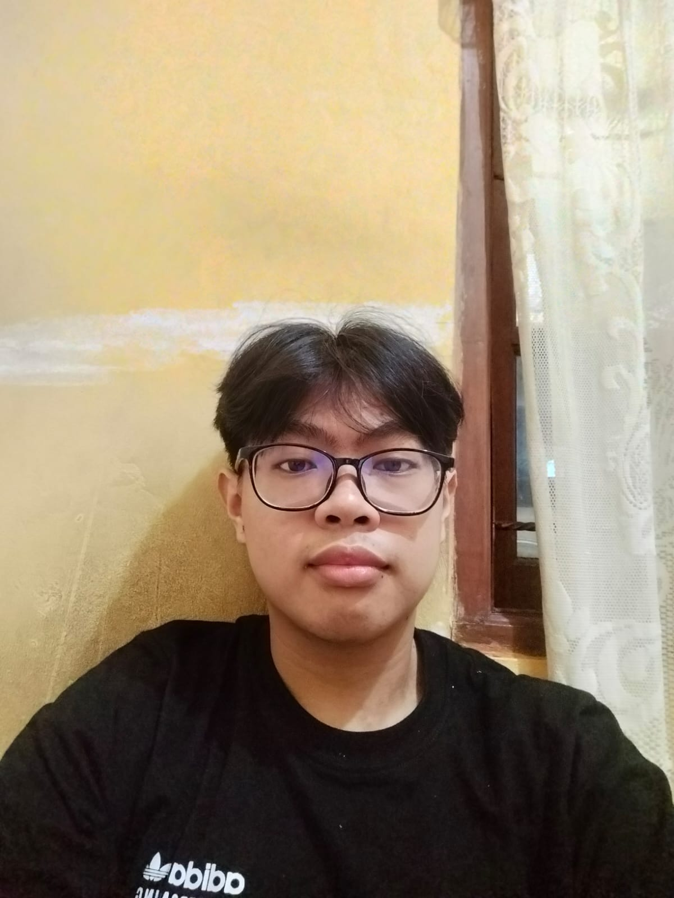

Halo, saya Jaysen Ryan.
Ngoding sambil dengerin musik.
Sebuah ruang kecil di internet tempat saya mendokumentasikan proses belajar, merangkai baris-baris kode, dan menapaki perjalanan menjadi seorang web developer.

Jaysen Ryan
Mahasiswa TRPL • Calon Web Developer
Tahun Ngoding
Jam Dengerin Musik/Hari
Jam Tidur/Hari
Bertumbuh lewat baris kode, alunan musik, dan ritme hidup yang seimbang.
Saat ini saya adalah seorang mahasiswa yang sedang menikmati fase belajar dan mencari sebanyak mungkin pengalaman baru. Ketertarikan saya perlahan mengerucut pada dunia teknologi dan pengembangan web sebuah ruang di mana imajinasi visual dan logika bisa bertemu di satu layar yang sama.
Sehari-hari, waktu saya banyak dihabiskan di depan laptop untuk bereksperimen dengan kode sambil ditemani playlist musik favorit selama berjam-jam. Bagi saya, proses merangkai blok-blok kode hingga menjadi halaman web yang interaktif punya keseruan tersendiri, apalagi saat berhasil memecahkan masalah yang sempat bikin penasaran.
Di luar urusan layar dan baris kode, saya percaya pikiran yang jernih butuh tubuh yang bugar. Karena itu, saya rutin menyempatkan waktu untuk olahraga di gym, sesekali bermain game untuk melepas penat, dan selalu menjaga waktu tidur tetap cukup agar energi untuk belajar esok hari selalu penuh kembali.
Hal yang Saya Sukai & Nikmati
Jejak Langkah Sejauh Ini
Rangkaian fase belajar dari bangku sekolah kejuruan, pengalaman pertama di dunia industri, hingga kuliah mendalami rekayasa perangkat lunak.
Awal Perkenalan dengan Dunia Kode
2022 – 2025SMK Negeri 2 Kuta Selatan • Jurusan Rekayasa Perangkat Lunak
Di sinilah ketertarikan saya pada dunia teknologi mulai terbentuk. Melalui jurusan Rekayasa Perangkat Lunak, saya pertama kali berkenalan dengan logika bahasa pemrograman, pengelolaan database, serta dasar-dasar membangun sebuah website dari nol.
Langkah Pertama di Dunia Industri
2023 – 2024PT Benlaris • Praktek Kerja Lapangan (PKL)
Menjalani Praktek Kerja Lapangan menjadi momen berharga saat saya pertama kali terjun langsung ke lingkungan industri. Pengalaman ini membuka sudut pandang baru tentang bagaimana ilmu yang dipelajari di sekolah diterapkan dalam ritme kerja nyata dan kolaborasi tim.
Mendalami Teknologi Rekayasa Perangkat Lunak
2025 – SekarangMahasiswa Politeknik Negeri Bali • Program Studi TRPL
Melanjutkan perjalanan akademik di Politeknik Negeri Bali untuk memperdalam pemahaman tentang rekayasa perangkat lunak secara lebih terstruktur. Di fase ini, saya aktif mengeksplorasi teknologi web modern dan membangun fondasi kuat menuju karier sebagai web developer.